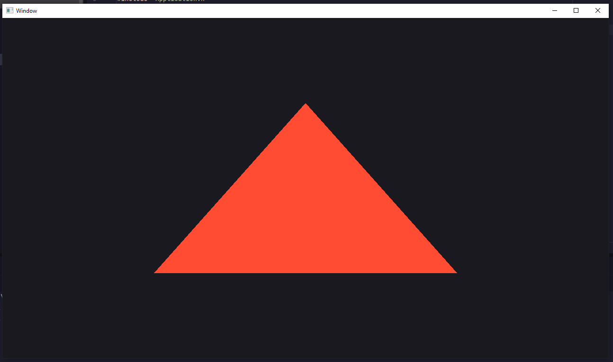

introduction to: Open Source
May 8, 2026, 18:39
what is "open source" you ask? well its a c++ recreation of the source engine, not in its entirety but
hopefully enough to feel like source engine at its core. yes the title is a pun, open SOURCE, hardey har.
i started a couple hours ago at 1 pm, currently as of writing this i am refactoring the opengl into separate scripts as to not clutter anything up i did manage to render a triangle >_>

i wanna preface that i dont know to code in c++ aside from some common syntax and basic concepts.
im having to force myself to READ, fucking ew.
i have adhd so its really hard for me to sit down and actually pay attention to shit
but i try.
im sure by the time im done thisll be awesome